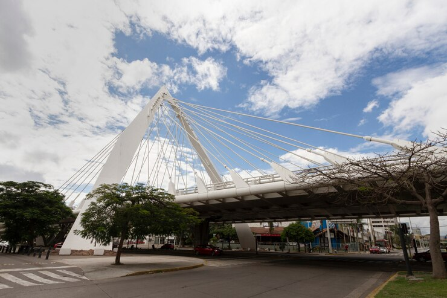

Curitiba

Cidade conhecida por seu planejamento urbano e parques.
Pontos Turísticos
- Jardim Botânico
- Rua das Flores
- Teatro Guaíra
Cuidados a Serem Tomados
- Respeite as normas de conservação nos parques.
- Utilize transporte público sempre que possível.